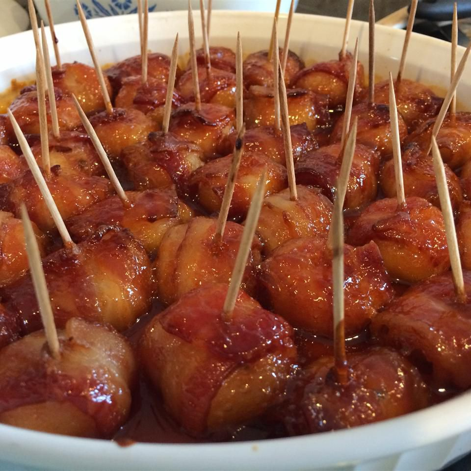

Bacon Wrapped Water Chestnuts
Home

Photo Credit/Origin: allrecipes.com
Description
Bacon-wrapped water chestnuts are a popular appetizer that consists of whole water chestnuts, wrapped in bacon and then cooked until the bacon is crispy. The combination of the slightly sweet and crunchy water chestnuts with the salty and savory bacon creates a harmonious balance of flavors and textures. These bite-sized snacks are often served at parties or as part of a larger spread and are a crowd-pleaser due to their irresistible taste and convenient size. (credit: openai chatGPT Jan 2023)
Ingreidients
- Two 8-ounce cans whole water chestnuts, drained and rinsed
- 2 tablespoons low-sodium soy sauce
- 14 slices bacon, cut crosswise into thirds
- 1/3 cup ketchup
- 1/3 cup firmly-packed dark brown sugar1 tablespoon Worcestershire sauce
- Nonstick cooking spray
- Freshly ground black pepper
Steps:
- Combine the water chestnuts and soy sauce in a resealable plastic bag and let marinate at room temperature, tossing and massaging the bag occasionally, for 30 minutes.
- Preheat the oven to 400 degrees F. Wrap each water chestnut in a piece of bacon and secure with a toothpick. Set a cooling rack into a rimmed baking sheet and arrange the bacon-wrapped water chestnuts on top. Bake until the bacon renders its fat and is crisp, about 30 minutes.
- Meanwhile, stir together the ketchup, brown sugar, Worcestershire sauce and 1/3 cup water in a bowl to make a sauce.
- Remove the baking sheet from the oven and carefully lift the cooling rack off the baking sheet. Drain away any fat in the baking sheet and wipe dry with paper towels. Line the baking sheet with foil and lightly spray the foil with nonstick cooking spray. Carefully transfer the bacon-wrapped water chestnuts to the bowl with the sauce, swirling to fully coat, then spread out on the baking sheet.
- Return the baking sheet to the oven and bake, tossing every few minutes, until the sauce is reduced to a sticky glaze, about 15 minutes. Immediately transfer the bacon-wrapped water chestnuts to a warm serving platter. Sprinkle with pepper and serve while hot.
Recipe credit: The Food Network: Copyright 2016 Television Food Network, G.P. All rights reserved.